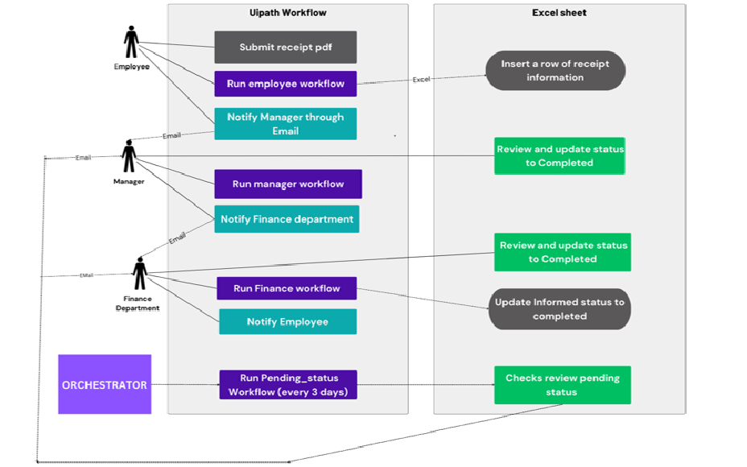

My Projects
DSBuilds

FitSync
Veritas Vogue
TrackExpiry

I’m doing my B.E Computer Science Engineering Degree in Rajalakshmi Engineering College.I have a deep curiosity for technology and its ability to solve real-world problems. I’m always eager to take on new challenges that push me to think critically and creatively.
With a strong work ethic, attention to detail, and a proactive mindset, I’m excited to contribute meaningfully to innovative tech projects. I look forward to joining a forward-thinking company where I can apply my skills, learn from experienced professionals, and grow into a valuable part of the tech industry.
Outside of academics, I enjoy engaging in creative and energizing activities like music, drawing, and playing badminton. I’m also passionate about volunteering, reading books that broaden my perspective, and staying active through regular workouts—all of which help me stay balanced, focused, and driven.
Red Hat System Admin certification – Scored 95%
UiPath Foundation Credential - UiPath Academy
Certified by Cisco Networking Academy
Oracle Academy SQL Programming Certificate
Feel free to reach out via email or follow me on social platforms.
Email: smdivyasundhari@gmail.com